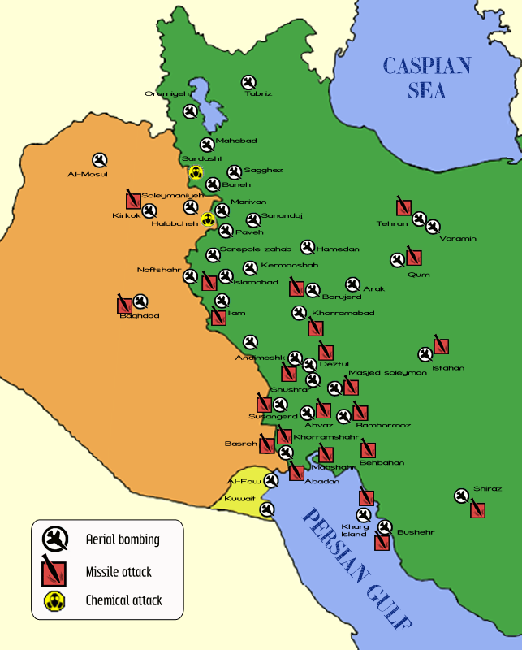

The start of the war
On 22nd of September 1980, the Iraqi forces attacked Iran. The war continued for eight years and ended with a cease-fire and a stale-mate.
The war started with Iraq launching an air strike on the Iranian bases and attacking the oil-producing city of Khoramshahr that is placed near the border of the two countries.
This conflict took place after the revolution in Iran, when Mohammad Reza Shah Pahlavi was replaced by Ayatollah Khomeini and a Shi’ite Islamic Republic.
Iraq attacked Iran to avoid the expansion of the Shi'ism in Iraq, a acountry that had a minority population of Sunni muslims.
Another reason was the control of the river Shatt al-Arab that is the border between the two countries. Based on the Algiers Agreement, Iraq reduced its control over the waterway in exchange for the end of the support of Iran of the Kurdish population in the northern part of Iraq.
It's worth mentioning that the Shatt al-Arab is the only acces of Iraq to the Persian Golf and therefore an important territory.
The attacks of Iraq were initially successful and they captured the city of Khoramshahr and other territories.
However, the Iraqi invasion soon stopped as Iranians showed a great resistance. In 1981 Iran strikes its counter affense and by 1982 it gained back all the lost territories. By the end of 1982 Iraq asked for a cease-fire, but Khomeini refused the offer to overturn Saddam's regime. Khomeini's attacks and efforts were unsuccessful and no territoryof Iraq was lost.
After unsuccessful attacks by both countries, on 20th of August 1988, both countries accepted the cease-fire by united nations.
Aftermath of the war
There are not exact data on the casulties of the war but it is estimated to be around 1-2 million, including almost 50,000 dead.
Iraq especially receaved international outrage for using multiple chemical weapons and bombings on Iran and on the Kurds in Iraq.
Iran suffered the greatest losses and thousands of Kurds have also been killed during the Iraqi attacks.
A series of photos by Alfred Yaghobzadeh captures the tragedies during this eight year long war.